WES Sharp - Dépanner le WES
Règles générales pour le dépannage
Afin de permettre à l'équipe Support Doxense® d'établir un diagnostic de panne rapide et fiable, merci de communiquer le maximum d'informations possible lors de la déclaration de l'incident :
-
Quoi ? Quelle est la procédure à suivre pour reproduire l'incident ?
-
Quand ? A quelle date et à quelle heure a eu lieu l'incident ?
-
Où ? Sur quel périphérique et depuis quel poste de travail a eu lieu l'incident ?
-
Qui ? Avec quel compte utilisateur s'est produit l'incident ?
-
Fichier trace Watchdoc.log : merci de joindre le fichier de trace Watchdoc.
-
Fichier de traces WES : merci d'activer les fichiers de trace sur chaque file pour laquelle vous avez constaté un incident.
Une fois ces informations rassemblées, vous pouvez envoyer une demande de résolution depuis le portail Connect, outil de gestion des incidents dédié aux partenaires.
Pour obtenir un relevé optimal des données nécessaires au diagnostic, utilisez l'outil Watchdoc DiagTool fourni avec le programme d'installation de Watchdoc (cf. Créer un rapport de logs avec DiagTool).
Activer les traces du WES (WEStraces)
Pour effectuer un diagnostic du problème rencontré sur les applications embarquées, il convient d'activer les fichiers traces (logs) spécifiques aux communications du WES.
Pour activer les traces :
-
dans l'interface d'administration web de Watchdoc, depuis le Menu Principal, cliquez sur Files d'impression ;
-
dans la liste des files, cliquez sur la file dotée du WES pour lequel vous souhaitez activer les fichiers traces ;
-
dans l'interface de gestion de la file, cliquez sur le bouton Propriétés ;
-
dans la rubrique [Nom_du_WES], cliquez sur le bouton Editer la configuration :
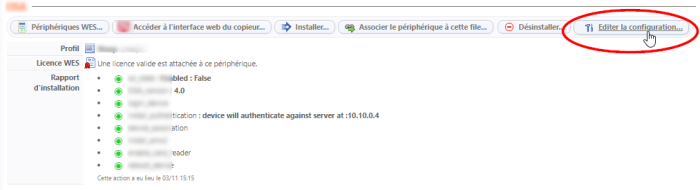
-
dans la section WES > Diagnostic, cochez la case Activer les traces ;
-
dans la liste Niveau de traces, sélectionnez :
-
Auto : conserve les traces standard ;
- Inclure les contenus binaires : conserve les traces détaillées.
-
- dans le champ Chemin, indiquez le chemin du dossier dans lequel doivent être enregistrés les fichiers de trace. Si vous laissez le champ vide, les fichiers trace seront enregistrés par défaut dans le dossier d'installation Watchdoc_install_dir/Logs/Wes_Traces/QueueId :
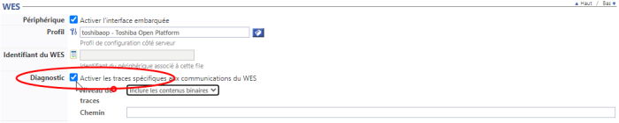
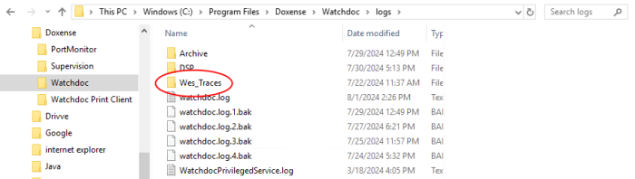
Travaux de numérisation, fax et photocopie non comptabilisés
Si les travaux de numérisation, fax et photocopie ne sont pas comptabilisés par Watchdoc, vérifiez que l'adresse (nom d'hôte ou IP) du serveur Watchdoc configurée dans le périphérique est correcte :
-
dans l'interface de configuration de la file, dans la section WES, cliquez sur le bouton Etat de l'application (affiché lorsque le WES est correctement installé) ;
-
cliquez sur le bouton Télécharger afin de télécharger les fichiers de logs et de configuration du WES ;
-
si la configuration de l'adresse et/ou des ports n'est pas correcte, cliquez sur le bouton Configurer de l'interface de configuration de la file ;
-
vérifiez que la procédure a réglé le problème.
Problème de quota doublé lors de l'impression d'un format large (A3)
Contexte
Lorsqu'un double quota est activé pour tenir compte du format d'impression (un quota pour le format A4 et un autre pour le format A3), il arrive que l'on constate une erreur de comptabilisation, les impressions en grand format étant comptés deux fois dans le quota.
Par exemple, on dispose :
-
d'un quota appliquant un coût unitaire de 1 € pour une impression A4 ;
-
d'un quota appliquant un coût unitaire de 2 € pour une impression A3.
En cas d'impression A3, au lieu d'être débité de 2 €, le quota est débité de 4 € .
Cause
L'erreur est due au système de comptabilisation du périphérique qui compte un grand format comme deux petits formats. Le coût est alors doublé, alors que le quota configuré pour un grand format est déjà plus élevé que le quota pour un petit format.
Résolution
-
Rendez-vous sur la file d'impression sur laquelle l'erreur de comptabilisation a été constatée ;
-
depuis l'interface de consultation de la file, cliquez sur le bouton Editer les propriétés de la file ;
-
dans l'interface Propriétés de la file d'impression, rendez-vous dans la section Mode Expert ;
-
pour le paramètre Comptabilisation, cochez la case Redresser la comptabilisation pour les grands formats :
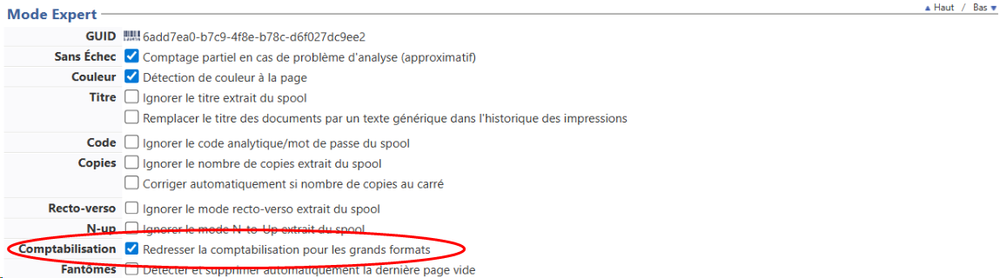
-
Lancez une impression grand format pour vérifier que le quota n'est plus doublé.
{kind=link}
Icones Watchdoc et WEScan mal dimensionnées
Contexte
Sur le WES, on constate que les icones Watchdoc et WEScan n'ont pas la même taille :
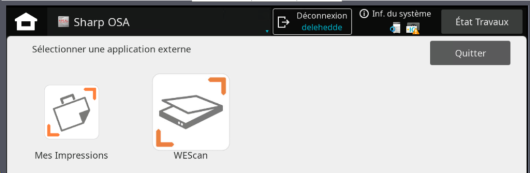
Résolution
Pour résoudre ce problème, il convient de mettre à jour Watchdoc en v. 6.1.1. 5486 qui contient un correctif.
Installation du WES impossible - Message d'erreur "302 Moved Temporarily"
Contexte
Lors de l'installation du WES sur les périphériques Sharp, le message d'erreur suivant apparaît dans le rapport, empêchant l'installation du WES : ssl_states : WES Java request to [IP Adress] failed with statuts 302 Moved Temporarily:
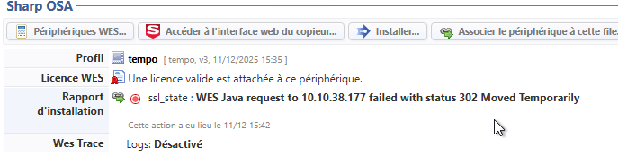
Résolution
Pour résoudre ce problème, il convient de mettre à jour Watchdoc en v. 6.1.1. 5465 qui contient un correctif.
Installation du WES impossible problème de communication lié aux options AMX2 et AMX3
Contexte
Lors de l'installation du WES sur les périphériques Sharp MX-M2651, MX-M3051, MX-M3551, MX-M4051, MX-M5051 ou MX-M6051, le message d'erreur suivant apparaît dans le rapport, empêchant l'installation du WES :
WES Java request to [IP Adress] failed with statuts 404 Not Found Login failed (check credentials):
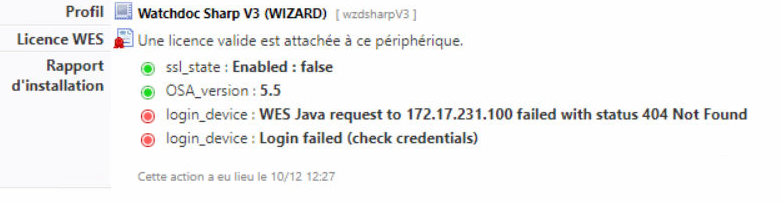
Dans l'interface de configuration du périphérique, sous l'onglet Règlages système > Réglages Sharp OSA > Réglages de l'application standard, l'interface se présente comme ci-dessous :
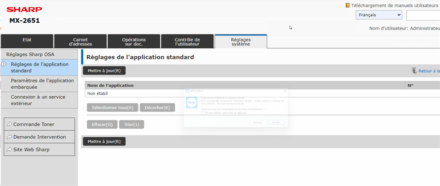
Cause
Ce problème est dû aux modules AMX2 (module de communication avec une application) et AMX3 (module de comptabilisation externe) qui n'ont pas été installés sur le périphérique*. Ce dernier ne peut donc pas communiquer avec Watchdoc.
* ces modules sont installés par défaut sur les modèles MX-M3071, MX-M3071S, MX-M3571, MX-M3571S, MX-M4071, MX-M4071S, MX-M5071, MX-M5071S, MX-M6071 ou MX-M6071, mais doivent être installés sur les périphériques d'impression MX-M2651, MX-M3051, MX-M3551, MX-M4051, MX-M5051 ou MX-M6051.
Résolution
Pour résoudre ce problème
-
activez l'option AMX2 - BP-MX10 sur vos périphériques :
-
à l'aide d'un navigateur, accédez à l'interface web du périphérique ;
-
authentifiez-vous avec un compte administrateur ;
-
dans le menu, cliquez sur Réglages système > Réglages Sharp OSA > Réglages de l'application standard ;
-
dans l'interface Enregistrement de l'application standard, complétez les champs :
-
Nom de l'application : saisissez le nom de l'application "Watchdoc" ou "Mes impressions" ;
-
Adresse de l'interface utilisateur de l'application : saisissez l'url http://IPSERVEUR:5754/dsp/Sharp/Osa/2.0/Web/Jobs
ou, si vous êtes en SSL, saisissez l'url https://IPSERVEUR:5753/dsp/Sharp/Osa/2.0/Web/Jobs
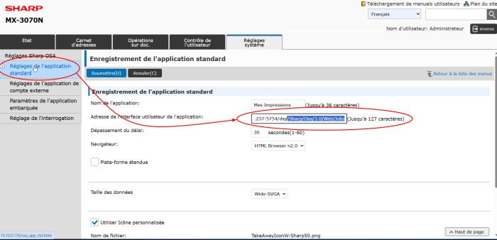
-
-
-
Activez l'option AMX3 - BP-MX11
-
à l'aide d'un navigateur, accédez à l'interface web du périphérique ;
-
authentifiez-vous avec un compte administrateur ;
-
dans le menu, cliquez sur Réglages système > Réglages Sharp OSA > Réglages de compte externe ;
-
dans l'interface Contrôle de compte externe, complétez les paramètres :
-
Contrôle externe de comptes : sélectionnez Activer ;
-
Régler le serveur d'authentification : cochez la case ;
-
Nom de l'application : saisissez le nom de l'application "Watchdoc" ou "Mes impressions" ;
-
Adresse de l'interface utilisateur de l'application : saisissez l'url http://IPSERVEUR:5754/dsp/Sharp/Osa/3.0/Web/Login
ou, si vous êtes en SSL, https://IPSERVEUR:5753/dsp/Sharp/Osa/3.0/Web/Login
-
Adresse des services web : saisissez l'url http://IPSERVEUR:5754/dsp/Sharp/Osa/1.0/Service
ou, si vous êtes en SSL, https://IPSERVEUR:5753/dsp/Sharp/Osa/1.0/Service
-
Dépassement du délai : conservez la valeur choisie comme délai durant lequel le périphérique dialogue avec le serveur.
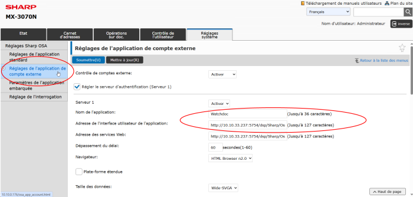
-
-
-
Vérifiez que les deux options figurent sous l'onglet Règlages système > Réglages Sharp OSA > Réglages de l'application standard.
WES Sharp - Accès au WES impossible depuis l'écran d'accueil du périphérique
Contexte
Lors de l'installation du WES sur des périphériques récents, aucun message d'erreur n'apparaît et le rapport d'installation indique qu'elle s'est bien déroulée.
Cependant, le WES (bouton "Mes impressions") n'apparaît pas sur l'écran d'accueil du périphérique Sharp.
Cause
Ce problème peut être dû au fait que le WES n'est pas activé sur le périphérique qui ne le reconnaît donc pas.
Résolution
Pour résoudre ce problème,
-
accédez à l'interface de configuration du périphérique en tant qu'administrateur ;
-
sous l'onglet Règlages système > Réglages de l'écran d'accueil > Réglage des conditions, c'est l'option Sharp OSA qui est cochée pour le paramètre Sharp OSA;
-
cochez l'option Application :
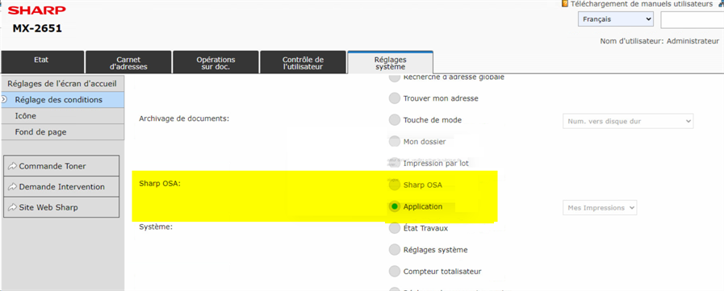
-
validez ce nouveau paramétrage ;
-
depuis l'écran d'accueil du périphérique, vérifiez que vous accédez à l'application WES "Mes impressions".
Dysfonctionnement des MFP Sharp avec SNMP
Contexte
Il arrive que les périphériques Sharp ne fonctionnent plus après l'activation du SNMP et envoient une erreur de type "maintenance préventive".
Cause
Les périphériques Sharp utilisent SNMP pour envoyer des informations de maintenance préventives (en cas de toner ou de bac papier vides, par exemple).
Watchdoc est alors informé via SNMP que le périphérique est en panne alors que ce n'est pas le cas. Le message perdure, même après l'intervention qui permet de résoudre le problème (changement du toner et alimentation du bac à papier, par exemple).
Résolution
Modification unitaire
Pour résoudre le problème, il est possible de désactiver totalement le SNMP, mais on risque de perdre des données relatives à l'utilisation du périphérique.
Il est donc recommandé de désactiver la surveillance de l'état du périphérique depuis l'interface d'administration Watchdoc :
-
depuis le Menu principal, section Configuration > Imprimantes & périphériques, sélectionnez le périphérique Sharp concerné par le problème ;
- dans l'interface de configuration du périphérique, section Monitoring :
cochez la case SNMP Activer le monitoring réseau ;
décochez la case Etat > Surveiller le niveau des consommables ;
décochez la case Etat > Surveiller le niveau des bacs papier.
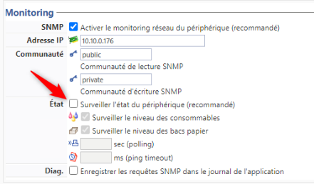
Modification en masse
Dans le cas où un grand nombre de périphériques est concerné par le problème, il est préférable d'utiliser l'outil de modification de masse ConfigTool.
-
En tant qu'Administrateur, accédez au serveur sur lequel est hébergé Watchdoc ;
-
rendez vous dans C:\Program Files\Doxense\Watchdoc\Tools\ConfigTool et cliquez sur ConfigTool.exe ;
-
dans ConfigTool, sélectionnez les files d’impression à modifier ;
-
arrêtez le service Watchdoc ;
-
cliquez sur All en haut à gauche, puis sur Edit XML ;
-
dans la boîte Field name, sélectionnez monitors/NETMON/@enabled :
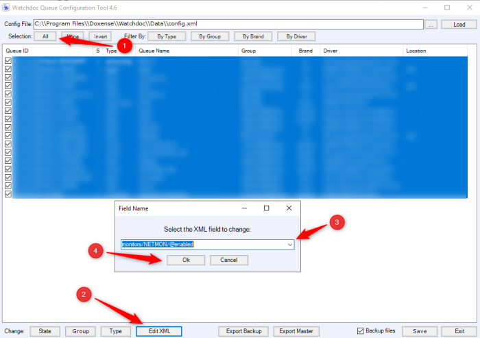
-
dans la boîte Specify the new value, saisissez la valeur "true" pour activer le SNMP en masse :
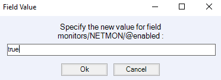
-
dans la boîte FieldName, sélectionnez ensuite monitors/NETMON/monitor-status :
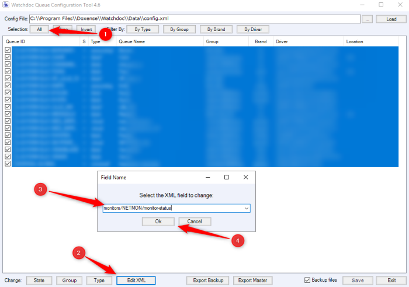
-
dans la boîte Specify the new value, saisissez la valeur "false" pour désactiver le monitoring :
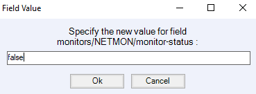
WES Sharp - Impression impossible depuis une file virtuelle
Contexte
Sur des périphériques équipés du WES Sharp sur lesquels est appliquée une politique d'impression, le travail n'est pas imprimé.
Le travail est lancé et s'affiche dans la file d'attente du WES. Quand l'utilisateur valide, le périphérique s'active, mais le document n'est pas imprimé.
Dans les logs, les utilisateurs ne sont pas reconnus pour l'impression ou la copie "scan tous" se retrouve dans ?META/anonymous.
Pourtant, les travaux en attente apparaissent bien dans la file virtuelle.
Cause
Le problème est lié à une configuration du pilote de la file d'impression virtuelle Sharp qui ne reconnaît pas le nom de connexion comme nom d'utilisateur.
Résolution
Le problème doit être résolu dans l'interface de configuration du pilote Sharp :
-
rendez-vous sur l'interface d'administration du périphérique Sharp en tant qu'administrateur ;
-
dans le menu, cliquez sur Configuration ;
-
dans l'interface Configuration, cliquez sur Politique d'impression :
-
dans l'interface Politique d'impression, cochez les cases
-
Utilisez le Nom de connexion Windows comme 'Nom de Connexion'
-
Utilisez le 'Nom de connexion' comme 'Nom d'utilisateur'.
-
-
Appliquez ce paramétrage:
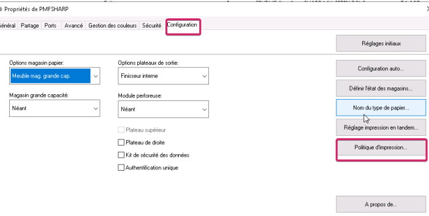
-
Rendez-vous ensuite sur l'interface "Préférences d'impression par défaut" et cliquez sur l'onglet "Gestion travaux"
-
Dans la section "Réglages initiaux", pour le paramètre "Authentification", sélectionnez "Nom de connexion" :
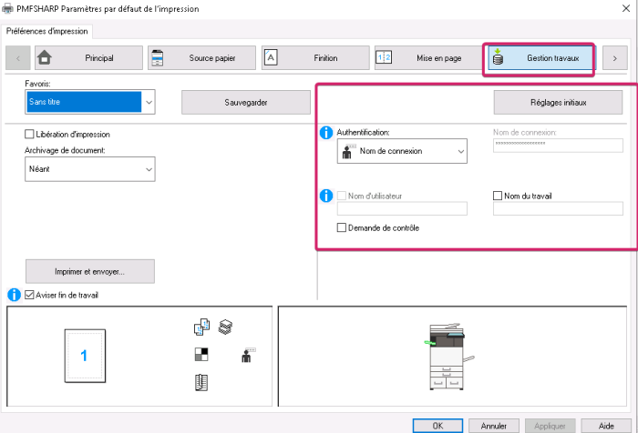
-
Cliquez sur OK pour valider ce paramétrage.
Message d'erreur - Impossible de joindre le serveur d'auth.
Contexte
Alors que tous les prérequis d'installation sont respectés et que le WES a été installé sans problème sur des modèles v.6, le message d'erreur "Impossible de joindre le serveur d'auth." s'affiche sur le périphérique d'impression quand un utilisateur tente de s'identifier.
Cause
Le dysfonctionnement provient d'une configuration sur le périphérique d'impression : lors de l'installation du WES, le paramètre "Activer l'Authentification hors-ligne" est activée.
Résolution
Après avoir installé le WES,
-
rendez-vous dans l'interface de configuration du périphérique ;
- sous l'onglet Réglages système, cliquez sur Réglages d'authentification > Réglages par défaut
- dans la section Paramètres d'utilisation des Informations d'authentification, décochez la case Activer l'authentification Hors-Ligne avec les Informations utilisateur stockées...
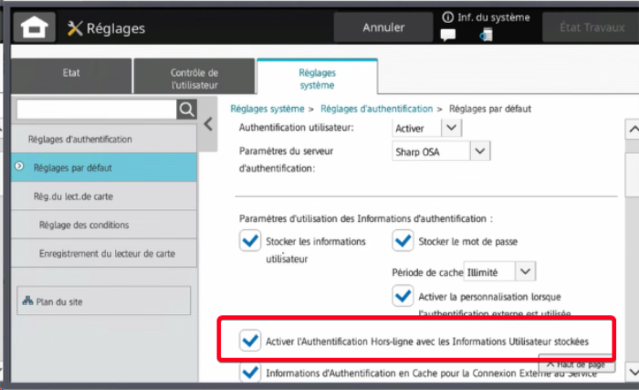